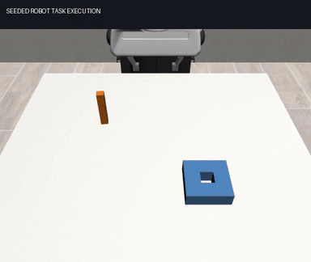

Recorded Panda tasks with state observations and a frozen rule controller. Agent task completion and source-context transfer are evaluated separately. These recordings use version 0.6.0 with corrected contact friction.
| Experiment | Task success | Evidence |
|---|---|---|
| Agent: five tasks, two physical worlds | 8/10 | Episodes and videos |
| Cross-family transfer: six conditions | No context 3/6; matching source and action effect 4/6; other conditions 3/6 | Paired report · Source episodes |
| Manufacturing-only installation: Chinese goals | 1/2; PyTorch absent | Episodes and videos |
Metric version: eah.metrics.v2. Completion checks release, task geometry and five consecutive successful samples. Raw wrist load is diagnostic; no default force limit.
Two physical worlds are insufficient for a confidence interval. The observed transfer uses free-space servo calibration, not a learned contact model.
Both source tasks failed to complete. Their motion probes remain valid interaction data; the source report retains the full failures.

The GIF is an accelerated preview of a successful target rollout. Open the reports for full-timing videos, failures, trajectories and file hashes.